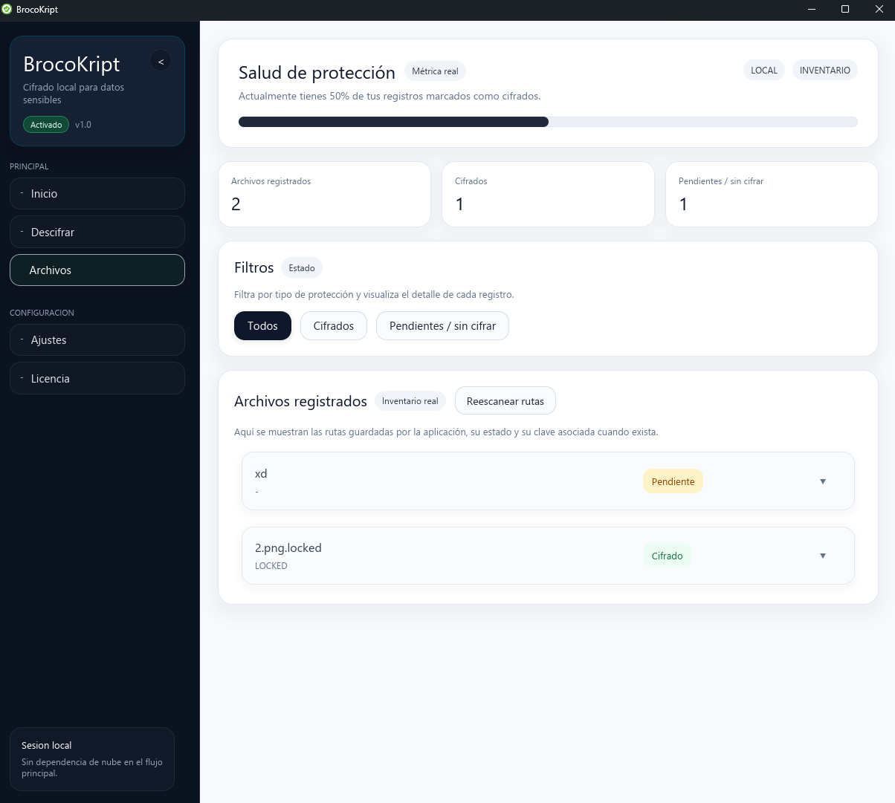
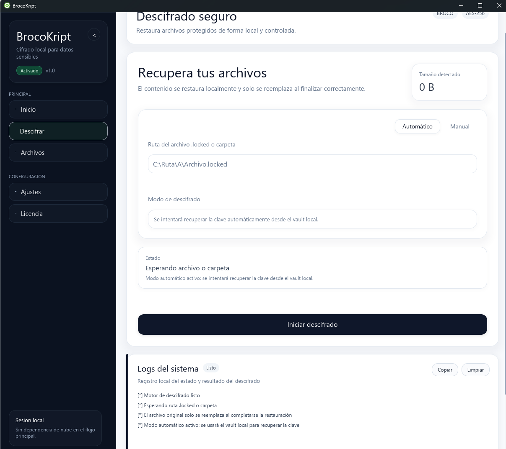
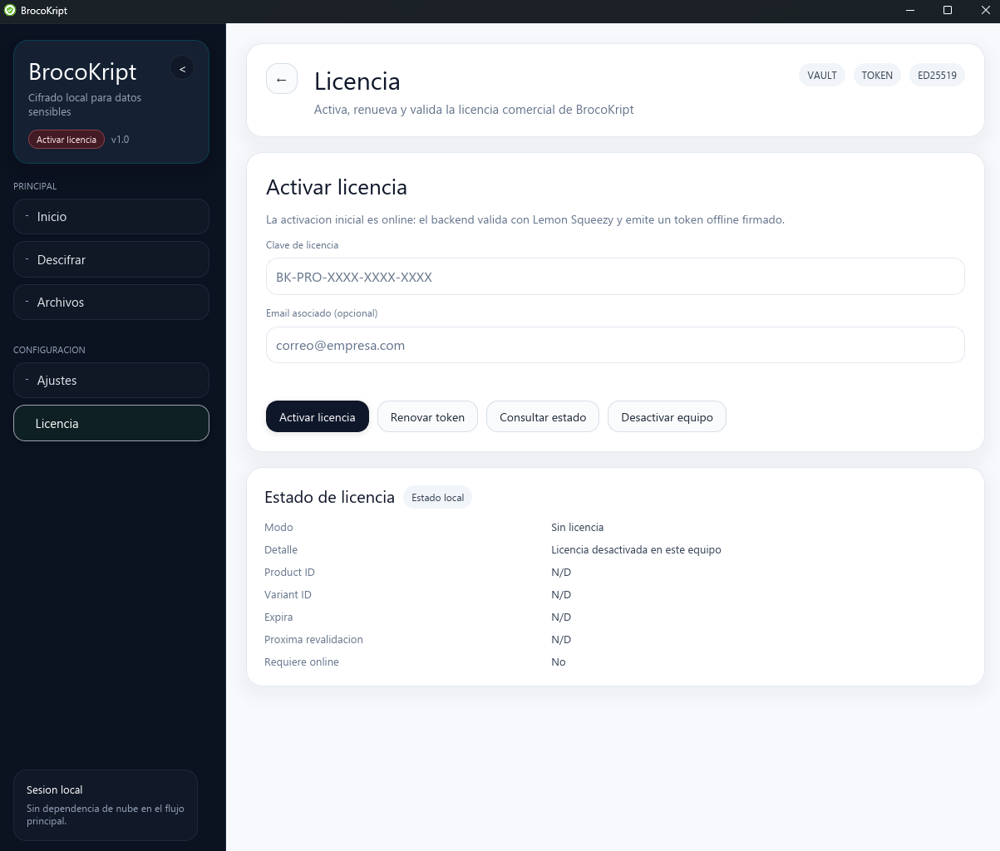
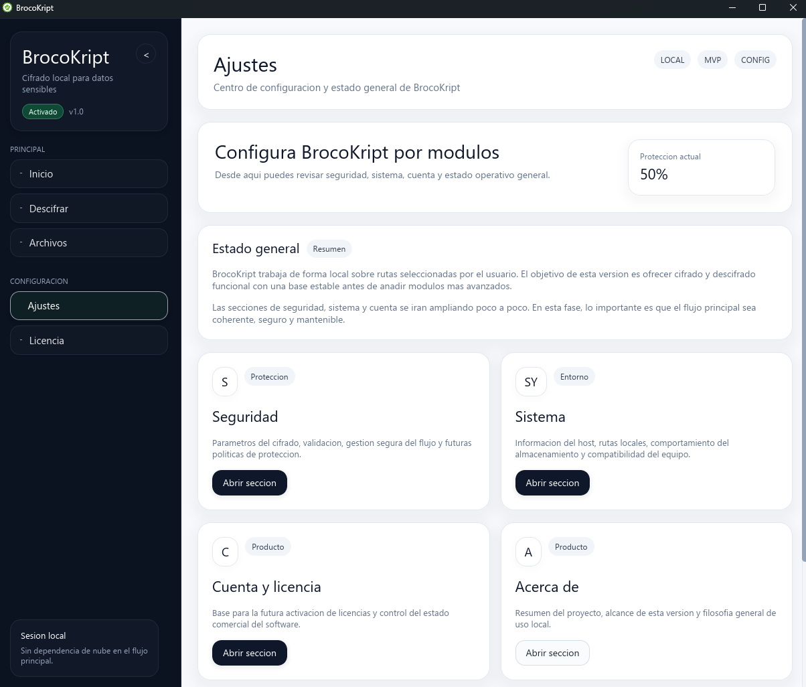

Interfaz
Interfaz clara para cifrar, organizar y recuperar archivos.
Estas capturas muestran cómo se trabaja en la aplicación real, sin maquetas ni pantallas inventadas.
Módulos principales
Pantallas clave de la aplicación
Cada módulo está orientado a una tarea concreta para evitar confusión en el uso diario.
Archivos
Gestión
Lista, filtros y consulta rápida del estado de archivos protegidos.
Descifrado
Recuperación
Proceso directo para recuperar archivos cuando lo necesites.
Licencia
Activación
Sección separada para gestionar activación sin mezclarla con cifrado.
Ajustes
Configuración
Parámetros del sistema organizados por bloques claros.